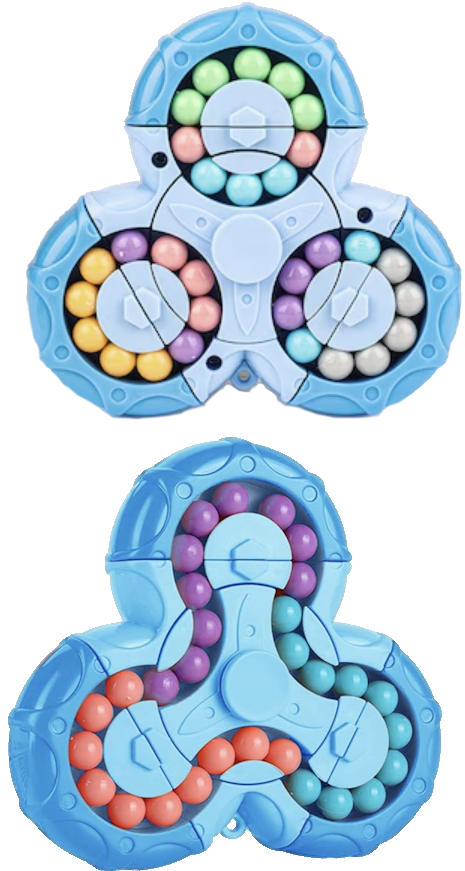

MAGIC BEAN / FROM TWO IMAGES TO THREE.JS
I asked Astra how it created this puzzle
The starting reference
Two images · two configurations

SEPARATE CIRCLES
SINGLE CHAMBER
Astra’s Three.js model
THE FINISHED PUZZLE
FROM REFERENCE TO GEOMETRYTwo images. One working puzzle.
Two images + a short explanation of the mechanism